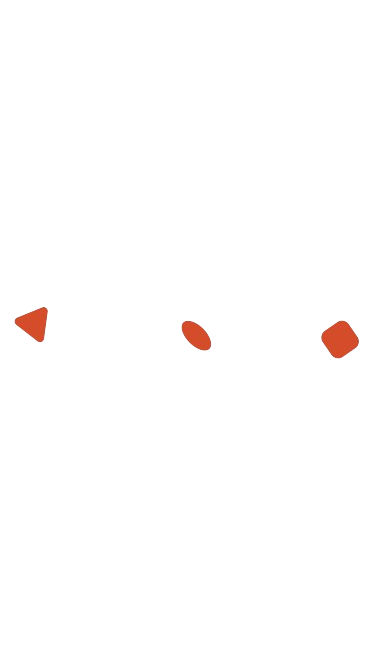
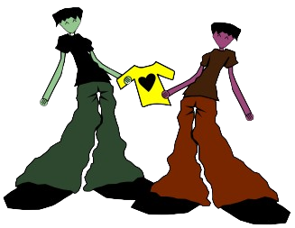
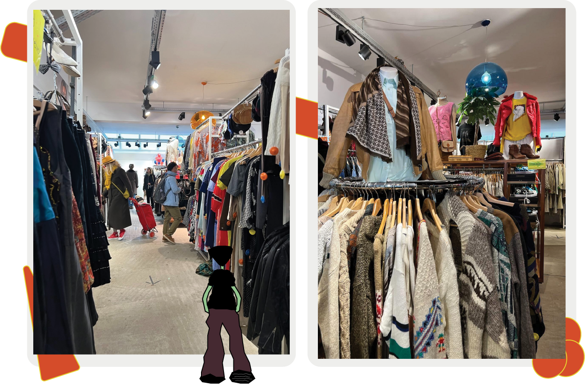
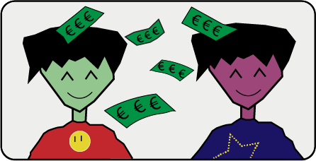

Waarom 2e hands?
 -
Minder afval
Elk jaar word er 150 miljard nieuwe kledingstukken verkocht. Veel hiervan worden ook weggegooid en komen bij het afval terecht. Door het kopen en verkopen van 2e hands krijgt je kleding nog een nieuw leven en word het Minder snel weggegooid.
-
Minder watervervuiling
Voor het maken van kleding is water nodig, maar deze word vervuild door de chemicalien die ze gebruiken om bijvoorbeeld te bleken. Door het kopen van tweede hands kan er minder vaak nieuwe kleding gemaakt worden en blijft het dus schoner.
- 
-
Minder luchtvervuiling
Voor het maken van stoffen en de transport van de kleren komt er veel co2 vrij wat wij weer inademen. Als er minder nieuwe kleding gekocht word komt er ook minder co2 vrij.
-
Geld besparen
De producten zijn al eerder gedragen waardoor de prijs ervan daalt. Hierdoor ben jij minder geld kwijt en krijgt een kledingstuk een nieuw leven!
Lees hier voor tips